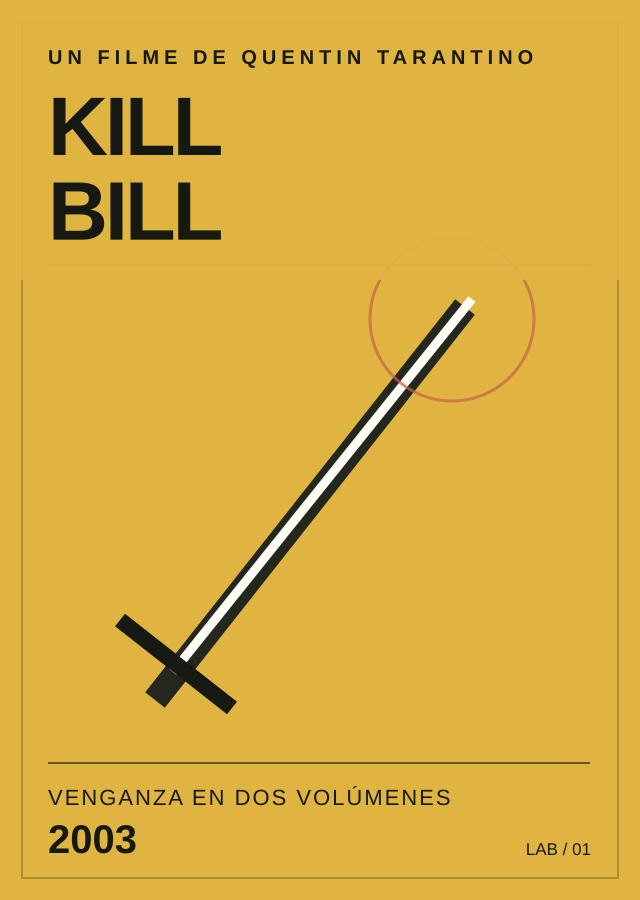

FAVORITA 01
Kill Bill: Vol. 1
La elijo por su energía visual y sus secuencias de acción. El uso del color, la música y los distintos estilos de cine hacen que tenga una personalidad muy marcada.
LABORATORIO 01 · FAVORITOS
Si tuviera que elegir solo tres películas de Tarantino para recomendar, estas serían mis primeras opciones.
Aunque cada una cuenta una historia distinta, las tres combinan una identidad visual clara, personajes fuertes y escenas que llaman la atención por la música, el diálogo o la tensión. Eso es lo que más me gusta del cine de Tarantino.